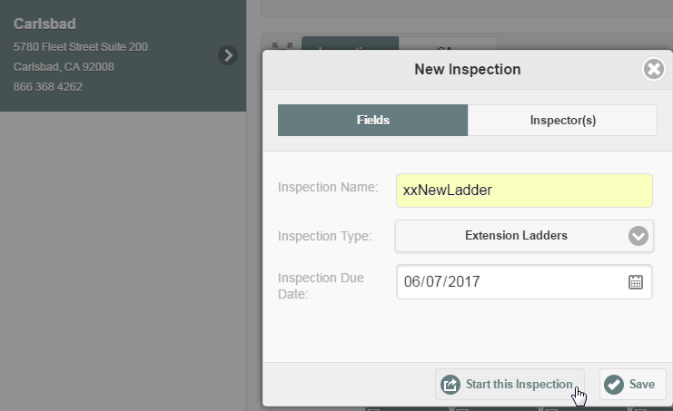
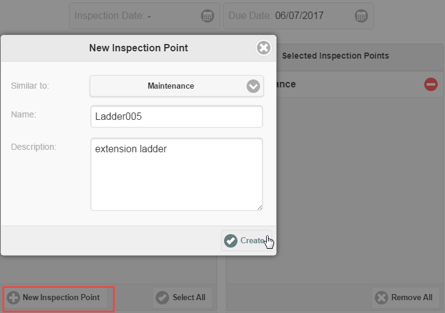

You can add new inspection points directly from the InspectionApp by creating a copy of an existing inspection point. Identify an inspection point at the same facility which is similar to the inspection point you want to add. When you copy the inspection point, the new inspection point will be associated with the same inspection types.
You can create new inspection points "on the fly" while conducting an inspection by clicking the Inspection Points button on the progress indicator at the top of the inspection form to return to that step. After adding the inspection point, a new section will be created for the inspection in progress.
If you create a copy of the inspection point object from the Management System interface, rather than the InspectionApp interface, all workflow associations (inspection types and questions) will be copied if the configuration uses Library questions, since the associations are defined by Tag Schemes and Tags.
For Legacy Questions (previous to version 2.2), if you copy an object representing an inspection point from the Management System, you must manually associate the applicable questions with the object. If you create a new inspection point from the InspectionApp interface those associations are made automatically.
To create a new inspection point:
Enter an inspection name. If you are creating the object for future use and do not intend to conduct an inspection immediately, make the name something that will be easy to find so you can delete the task later. (In the example below, a prefix of XX was added to mark it.) Enter a due date (you can use the current date). You will also need to select an Inspector (you can assign it to yourself). Then click Start this Inspection.
Remember, when you click "Start this Inspection" you are creating the task that will appear on the calendar; you are not creating the inspection yet. When you are done you will need to delete the task from the system if you do not intend to continue with an actual inspection for the new object.

Select New Inspection Point. In the "Similar to" drop-down list, select the existing inspection point you want to copy. Enter the name for the new inspection point and a short description. (The description becomes the description of the object in the system, but it can be edited later with other properties). Click Create.

The new inspection point object will be created and displayed in the Relevant Inspection Points panel. You can select it if you want to conduct an inspection with it now, or continue to create more inspection points as needed. When you are done, you can return to the calendar by clicking the calendar button.
At this stage a task will have been created for each new inspection point, which you can see on the calendar. These temporary tasks should be deleted.
To delete the temporary task(s):
You can edit the properties of the inspection point in the Management System, if necessary. The new object will be shown in the system model at the same location as the original object that was copied. (If you don't see it, right click the parent object and select Refresh.) See Edit Inspection Points.